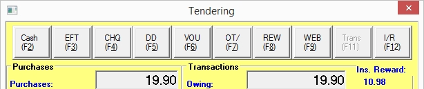
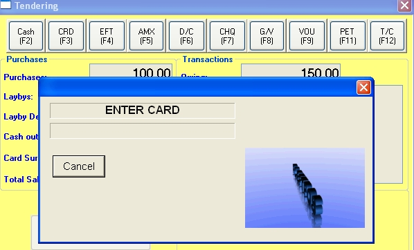
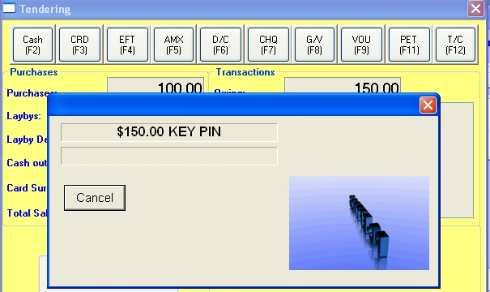
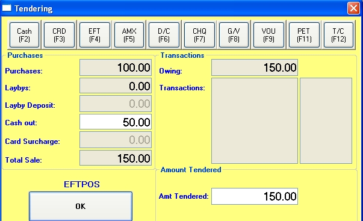
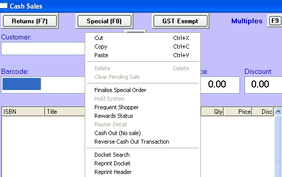
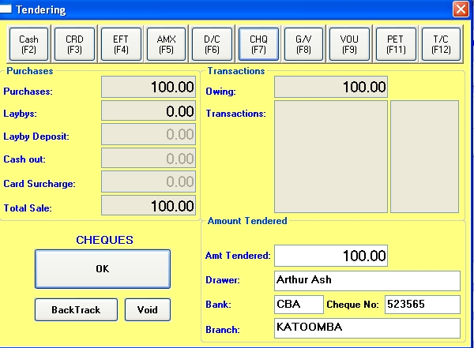
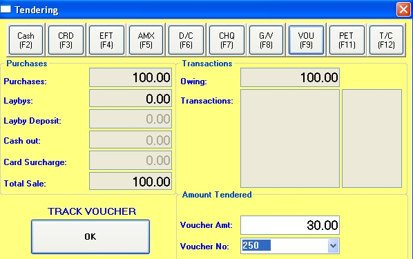
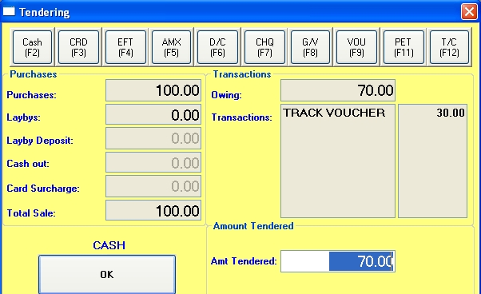
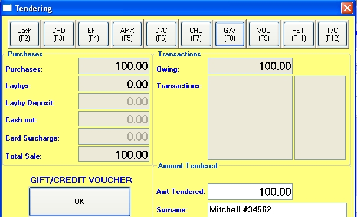

Buttons representing the various transaction types available are displayed across the top of the Tendering window.

Cash
Where the tender type is cash, the Total Sale field will display the total sale amount. The Owing field will be this total rounded to the nearest 5c (Australia) or 10c (New Zealand).
By default, the Amount Tendered field displays the rounded total. If required, overtype the amount tendered: e.g. in a sale of $17.99, the sale total will display $17.99, the amount owing and the amount tendered $18.00. If the customer tenders a $20 note as payment, type '20' into the Amount Tendered field. Click OK (or press the Enter key) and sale will be processed and the Change window opened to display change of $2.00.
Instant Rewards
If Rewards at the point of sale are being used, the amount available will be displayed in the top right corner of the window as the "Ins. Reward:" amount. If it is only partially redeemed, the remainder will stay against the customer account, but may drop them below the threshold & not be able to be redeemed until they again exceed it.
Integrated EFTPOS
EFTPOS can be integrated into Bookscan (the preferred method) but it can also be used as a stand alone operation. (Refer to the EFTPOS section in the Modules chapter for details in setting up integrated EFTPOS).
EFTPOS payments To process an EFTPOS purchase, select the appropriate EFTPOS transaction type in the tendering window. If the Owing and Amount Tendered fields had been displaying a rounded amount, they will now be changed to show the un-rounded amount. Unless making a part-part with EFTPOS (see multiple transaction types below), do not change the amount tendered.
Clicking the OK button (or pressing the Enter key) will cause the EFTPOS pinpad's software to execute and this will now handle the transaction. (You may wish to refer to your pin pad manual at this point). A window will display on the screen telling you to insert your debit/credit card.

A similar message will display on the pinpad. Insert the card into the pinpad and the window (and pinpad) will ask you to select a card type. Select the card type on the pinpad.
For a debit card, you will be asked for a pin number. Have the customer enter the pin number into the pinpad and then press the Enter button.

The EFTPOS transaction will be processed direct to the bank and two EFTPOS dockets will print – a merchant copy and a customer copy. The pinpad software will now close, handing control back to Bookscan and the sale transaction will process, printing a standard sale docket.
For a credit card, you will be given a choice of a pin number or pressing OK on the pinpad for signature transaction. In the latter case, an EFTPOS docket will print for the customer to sign. Check the signature against the card and, if it is valid, press OK on the pinpad to complete the sale. Again, the merchant and customer copies will print and transaction finalised as for debit cards.
EFTPOS payments with cash out
The ability to give Cash Out is enabled in Utilities/System Options – Sales tab. Select define "Allow cash out at point of sale".
If a customer requires cash out with his purchase, process the transaction as outlined above except that after selecting the EFTPOS transaction type, enter the cash out amount in the Cash Out field. As you enter this amount, the Owing and Amount Tendered fields will increased accordingly

Click the OK button or press the Enter key, and the transaction will proceed as above.
Reversing an EFTPOS transaction To reverse a transaction paid for with EFTPOS, process the refund transaction as normal – i.e. click the Returns F7 button and scan the barcode for each item to be refunded. Click the Finalise button. The Tendering window will open in refund mode, coloured pink. Select the EFTPOS transaction type. If there is a cash-out amount to be reversed, enter the amount as a positive number, in the Reverse Cash Out field, otherwise leave it blank. Click the OK button or press the Enter key and the pinpad software will run. Refer to your pinpad's documentation for processing a reverse transaction. When the pinpad finished the EFTPOS transaction, the EFTPOS merchant and customer dockets will print and Bookscan will finalise the transaction, printing the refund docket.
Cash out only You can process a transaction where a customer gets cash out without making a purchase. In the POS window, click the right mouse in the window to open the context menu and select 'Cash out (no sale)'.

The Tendering window will open with the purchases field set at zero. Select the EFTPOS transaction tender type and then enter the cash-out amount in the Cash Out field. As you enter this amount, the Owing and Amount Tendered fields will increased accordingly. Click the OK button or press the Enter key, and the transaction will proceed as above for a cash-out with purchases transaction.
To reverse a cash-out only transaction, select 'Reverse cash out transaction' from the context (right mouse) menu. The Tendering window will open in refund mode, coloured pink. Enter the amount to be refunded, as a positive number, in the Reverse Cash Out field and proceed as for a cash-out only transaction.
Stand alone EFTPOS
EFTPOS can be integrated into Bookscan (the preferred method) but it can also be used as a stand alone operation.
To process an EFTPOS purchase, select the appropriate EFTPOS transaction type in the tendering window. If the Owing and Amount Tendered fields had been displaying a rounded amount, they will now be changed to show the un-rounded amount. Unless making a part-part with EFTPOS (see multiple transaction types below), do not change the amount tendered.
Now process the EFTPOS transaction through you pinpad. When the EFTPOS transaction is complete, enter any cash out amount in the Cash Out field. As you enter this amount, the Owing and Amount Tendered fields will increased accordingly. Click the OK button or press the Enter key, and the sale transaction will be finalised and a standard sale docket will print.
Cheques
In the Tendering window, when you select a tender transaction of type 'cheque', the window will display four extra fields: Drawer, Bank, Branch and Cheque Number. The first three fields are required fields.

If the customer code has been entered in the POS window and that customer has previously made a purchase by cheque, these three fields will be automatically filled by the program. In that case you can overtype them if required. The all cheque details for the day's sales will be listed on the Daily Banking list which firms the last page of the daily cashbook report.
If the amount of the cheque is greater than the amount of the sale, enter the cheque amount in the Amount Tendered field. When the transaction is finalised, the change window will appear, showing the change as the difference between the amounts.
Tracked vouchers
A tracked voucher is a gift voucher whose number and outstanding value is recorded within the Bookscan program. You can view the amount outstanding and the history of the vouchers use in the Voucher Enquiry window.
In the Tendering window, when you select a tender transaction of type 'tracked voucher', the window replace the Amount Tendered field with two fields: Voucher Amount and Voucher Number.

Enter the voucher number in the second field. The Voucher Amount field will then display the amount outstanding on the voucher. Click the OK button or press the Enter key, and if the voucher is sufficient to cover the sale, the transaction will be finalised. If the voucher still has an outstanding amount after the sale, this amount will be displayed in a pop-up window. Write this new balance on the voucher.
If the voucher is insufficient to cover the sale total, click the OK button will cause the amount to be saved to the Transaction browser, the Owing and Amount Tendered fields reduced and the tender type reset to the default.

Select another tender type to complete the transaction. See 'multiple tender types' below.
Gift cards and untracked vouchers
You may find it useful to set gift cards and untracked voucher transactions to be of type "require name". Where this setting is made, you will be required to enter a customer name (or other detail such as a voucher number) in a text field on the Tendering window. (Set up in Tables/Authority Tables/Transaction Types).

So in the Tendering window, select your transaction type. The window will display a text field Surname below the Amount Tendered field. You can overtype the amount tendered if required then press the Enter or the Tab key to move to the Surname field. You can type up to 20 characters. Click the OK button or press the Enter key to finalise the transaction. If the amount tendered is greater than the sale amount, the difference is displayed as change in the Change window. If the amount tendered is insufficient to cover the sale, it becomes a part payment, and you will need to select another tender transaction to complete the sale - see 'multiple tender types' below. This surname field prints on the end of day Cashbook and maybe useful for reconciliation.
Multiple tender types
You can have as many tender types as you wish to cover an individual sale transaction. In the tendering window select the first transaction type. Overtype the amount in the Amount Tendered field. Click the OK button or press the Enter key. The amount tendered does not cover the sale, the tender transaction will be saved to the Transaction browser, the Owing and Amount Tendered fields will be reduced and the tender type reset to the default. Select another transaction type to complete the sale. In the example below, the customer has part paid for the sale with two tracked vouchers and is about to complete the sale with a cash payment.